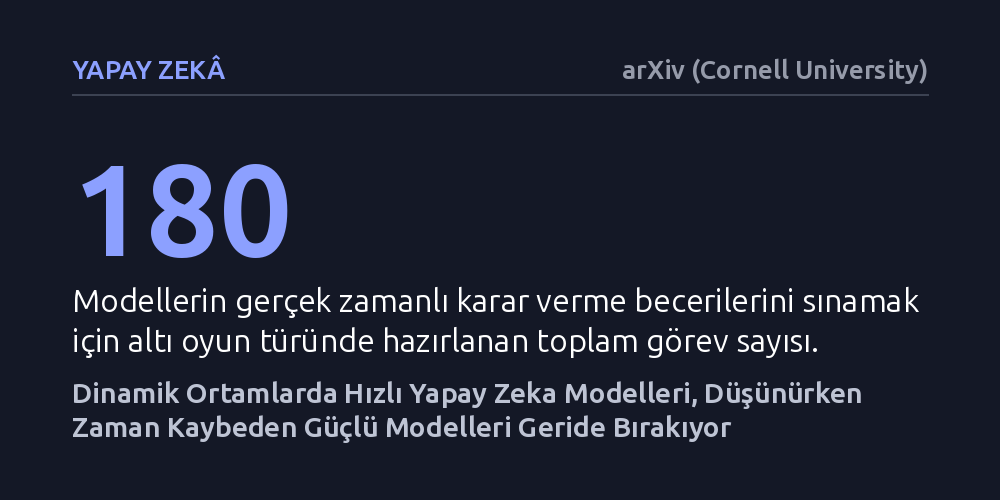

YAPAY-ZEKA · arXiv (Cornell University) · 2026-10-18
Araştırmacılar, zamanın durmadığı akan oyun ortamlarında büyük dil modellerinin karar hızını ve başarısını 180 görevde inceledi. Oyun duraklatıldığında üstün olan güçlü modeller süre akarken hızlı modellere yenildi; geliştirilen iki aşamalı çevrim dışı talimat yöntemi ise hızlı modellerin puanını neredeyse ikiye katladı.
Bir yapay zekanın ne kadar kapsamlı düşündüğü kadar ne kadar çabuk eyleme geçtiğinin de kritik olduğunu, geciken doğru bir kararın gerçek dünyada fayda sağlamadığını gösteriyor.

Büyük dil modelleri artık sadece soruları yanıtlamakla kalmıyor; karmaşık işleri planlayan, dijital araçları kullanan ve kararlar alan birer etmen olarak konumlandırılıyor. Ancak bu modellerin derin akıl yürütme süreçleri ve arka planda yaptıkları araç çağrıları kayda değer bir zaman alıyor. Mevcut test ortamlarının neredeyse tamamında yapay zekanın düşünmesi bekleniyor; yani model karar verene kadar dış dünya donduruluyor. Gerçek hayatta ise zaman durmuyor ve akıp giden bir dünyada çok doğru planlanmış bir hareket bile birkaç saniye geciktiğinde tamamen anlamsız hale gelebiliyor.
Bu ikilem, yapay zekanın güvenli ve etkili kullanımı önünde ciddi bir soru işareti doğuruyor. Kendi kendine giden bir otomobili, anlık finansal işlemleri veya afet bölgesindeki bir kurtarma robotunu yönlendiren bir sistemin gecikmeli karar alması hedefe ulaşmayı engelleyebilir. Araştırmacılar tam da bu gerçeği masaya yatırarak şu sorunun peşine düşüyor: Karar anında zamanın akmaya devam ettiği bir ortamda, modellerin muhakeme gücü ile tepki hızı arasındaki gerilim nasıl dengelenebilir?
Araştırma ekibi bu soruyu sınamak için 'RealtimeBench' adını verdikleri yeni bir kıyaslama platformu kurdu. Bu platform, altı farklı oyun türüne dağılmış 180 ayrı görevden oluşuyor. Sistemin en belirleyici özelliği, yapay zeka modeli bir sonraki hamlesini hesaplarken oyunun arka planda gerçek zamanlı olarak akmayı sürdürmesi. Böylece modelin hem oyun duraklatıldığında hem de süre kesintisiz akarken nasıl performans gösterdiği kontrollü bir biçimde ölçülebiliyor.
Deneylerde yüksek akıl yürütme kabiliyetine sahip ancak nispeten yavaş çalışan büyük modeller ile daha yalın ve seri yanıt veren hızlı modeller karşılaştırıldı. Ayrıca zaman baskısını hafifletmek amacıyla 'TORSI' adında iki zaman ölçekli bir öz-geliştirme mimarisi denendi. Bu kurguda yavaş ve kapsamlı düşünen bir öğretmen model oyun aralarındaki duraklatılmış zamanlarda geçmiş hataları inceleyip pratik yönergeler hazırlarken, hızlı öğrenci model oyun sırasında öğretmenine danışmadan bu yönergelerle doğrudan hamle yaptı.
Elde edilen sonuçlar oldukça net bir ayrımı ortaya koydu. Oyun duraklatıldığında karmaşık mantık yürüten güçlü GPT-6.1-sol modeli, daha hızlı olan Jev modeline belirgin bir üstünlük sağladı. Ancak zamanın durmaksızın aktığı gerçek zamanlı koşula geçildiğinde tablo tersine döndü; yavaş düşünen model hamlesini tamamlayana kadar oyun akışı değiştiği için geride kaldı ve hızlı model daha yüksek başarı gösterdi. Bu bulgu, hızdan ödün verilerek elde edilen saf akıl yürütme gücünün dinamik ortamlarda yetersiz kalabileceğini gösterdi.
Önerilen iki aşamalı eğitim yöntemi ise bu açığı kapatmada somut bir ilerleme sundu. Hızlı çalışan Jev modeli, derin düşünen öğretmenin hazırladığı strateji kılavuzlarını kullanarak iki tur öz-geliştirme sürecinden geçirildiğinde ortalama test puanı 13,51 seviyesinden 24,19'a yükseldi ve altı oyun türünün tamamında gelişme kaydedildi. Üstelik hazırlanan bu talimatlar, herhangi bir ek ince ayar gerektirmeksizin test edilen diğer üç modelin de ortalama skorlarını yukarı taşıdı.
Bu çalışma, yapay zeka alanında genellikle ikinci plana atılan işlem gecikmesi konusunu değerlendirmelerin merkezine taşıyor. Bir sistemi etkili kılan unsurun yalnızca dondurulmuş bir ortamda en karmaşık hamleyi bulması değil, değişen şartlara zamanında tepki verebilmesi olduğu anlaşılıyor. Araştırmacıların vurguladığı gibi, 'dünya yapay zekayı beklemiyor' ve sistemlerin de buna uygun zaman ölçeklerine göre yapılandırılması gerekiyor.
Pratik açıdan bakıldığında, her an için devasa modelleri canlı yayında çalıştırmak yerine, büyük modelleri arka planda strateji üreten birer antrenör, küçük ve hızlı modelleri ise sahada anlık tepki veren oyuncular gibi kurgulamak uygulanabilir bir mimari sunuyor. Yine de bu yaklaşımın oyun simülasyonlarının ötesindeki karmaşık fiziksel süreçlerde nasıl sonuç vereceği henüz bilinmiyor.